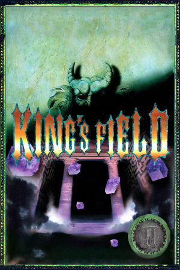

PlayStation
Originally released in Japan on July 21st, 1995, King's Field II is a first-person action RPG developed and published by FromSoftware, and the second entry in the King's Field series. It was the first game in the series to leave Japan, but because the original 1994 King's Field was never localized, it arrived overseas simply as "King's Field" - published by ASCII Entertainment in North America (February 14th, 1996) and by Sony Computer Entertainment in Europe (March 10th, 1997). As a result, the game Western players know as King's Field is actually the Japanese King's Field II.
The game takes place on the dark island of Melanat. The player takes the role of Granitiki prince Aleph (also known as Alef or Alexander), who has taken it upon himself, as one of the king of Verdite's closest friends, to retrieve the holy sword known as the Moonlight Sword and return it to King Alfred of the kingdom of Verdite. Aleph is washed up on the coast of Melanat as the sole survivor after the ship he came with sank into the ocean. To find the Moonlight Sword, he must press ever forward and uncover the secrets the island holds, exploring its dungeons, fighting monsters, and gathering ever-better equipment. Like its predecessor, the game offers slow, deliberate, atmosphere-heavy combat with real-time 3D graphics and no load times, and it was warmly received: Famitsu scored it 35 out of 40, and Western critics praised its graphics, sound, and the freedom to explore its massive 3D world.
FromSoftware
- Official developer website.
King's Field Neocities
- A cool fan site for the King's Field franchise.
King's Field Fandom Wiki
- A fan wiki dedicated to the whole series, with maps, bestiary and item data.
DuckStation
- The best PSX emulator.
King's Field II Manual (JP)
- PDF copy of the manual in Japanese.
King's Field II Manual (US)
- PDF scan of the official English manual for the Western release.
Sword of Moonlight
- A really cool tool for creating King's Field-like games.
Steam Grid DB (KF2)
- Contains lots of cool options for artwork that can be used in your Steam library.